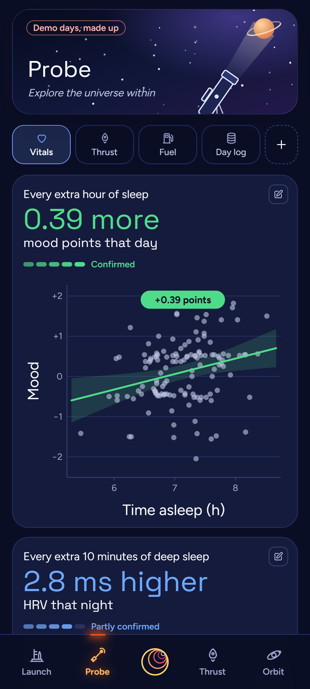
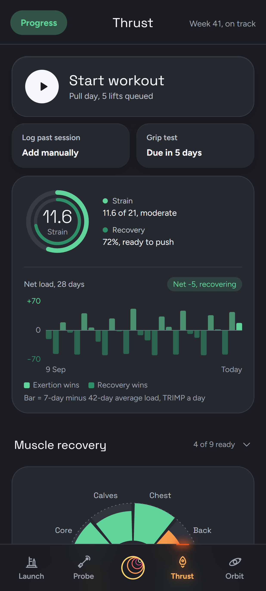
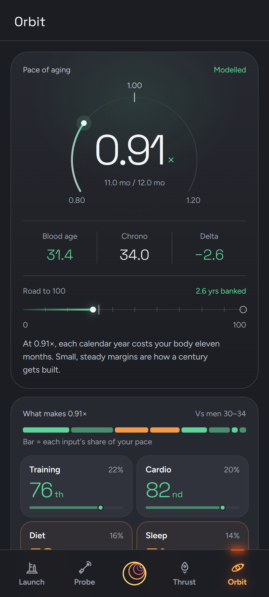

Your watch already knows. EON tells you what it means.
Recovery, sleep, training load and how fast you're aging, from the data your watch or ring writes to Health Connect. Every number is worked out on your phone. There's no account, and no EON server.
Join the test Android, by invitation, while EON is in testing.
Your body today, at a glance.
Four numbers when you wake up, and the day as it happened underneath: how you slept, what you ate, when you trained.
- Recovery from your heart rate variability and resting heart rate
- Stress through the day, hour by hour
- Sleep with its stages and a score
- Exertion against a target that fits your week

What moves your numbers.
Probe looks for links in your own days: more sleep and your mood the next day, a late coffee and your night, steps and your HRV. It tells you how sure it is, and only calls a link confirmed when your data holds it up.

Train hard on the right days.
Log a workout as you lift, and see how the load of the last weeks sits against your recovery.
- Strain for today, next to how recovered you are
- Net load over 28 days: building up or recovering
- Muscle recovery for each muscle group you trained

How fast you're aging.
Your pace of aging from your fitness, sleep, training and diet, built from published research. 0.91× means each calendar year costs your body eleven months. Orbit shows what makes up your pace, and which part has the most room to move.

Your data stays on your phone.
EON reads Health Connect and does the rest on the phone. Something leaves it only when you use a feature that needs it.
No account
Nothing to sign up for, and no EON server holding your data. Uninstalling deletes EON's copy.
AI only if you want it
AI is off by default. Turn it on with the AI service of your choice, even one on your own computer.
Read-only
EON never writes to Health Connect, and you can take any permission away there at any time.
Join the test.
EON is in testing on Android, with a small group of people who wear a watch or ring every day. Testers get each new version the day it's made, and their feedback shapes what comes next.
Ask for an invite